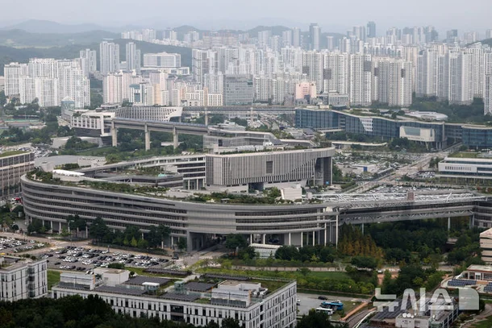

첫해인 2027년에는 별도 청사가 필요하지 않은 27개 기관(2천995명)이 세종 지역 민간 임차공간을 활용해 먼저 이전한다.
수사·보안·관제 등 업무 특성상 독립청사 등이 필요한 17개 기관(6천934명)은 2031년까지 별도 청사를 신축해 순차 이전하기로 했다.
상반기에는 방송미디어통신위원회(301명·과천), 개인정보보호위원회(224명·서울), 원자력안전위원회(134명·서울), 국가인권위원회(231명·서울), 국가교육위원회(54명·서울), 재외동포청(157명·인천) 등 6곳의 세종 이전이 우선 추진된다.
하반기에는 금융위원회(340명·서울)를 비롯해 각 부처 소속기관과 각종 자문위원회 등 19개 기관을 옮겨 임차청사를 활용한 기관 이전을 마무리할 계획이다.
법무부와 성평등가족부는 기존 이전 제외기관으로 명시한 '행복도시법' 개정 시기에 맞춰 이전 시점을 정할 계획이다.
청사 신축 후 2031년까지 이전이 추진되는 기관은 나머지 17곳이다.
감사원(1천59명·서울), 공소청(471명·서울), 중대범죄수사청(396명·서울), 경찰청(2천160명·서울), 고위공직자범죄수사처(85명·과천) 등 형사사법기관 5곳과 '행복도시법' 개정이 필요한 외교부(1천24명·서울), 통일부(336명·서울), 국방부(746명·서울) 등 외교 안보부처 3곳이다.
청사신축과 부처연계 이전이 추진되는 국사편찬위원회(85명·과천), 국립외교원(106명·서울) 등 소속기관 9곳도 포함된다.
이와 맞물려 대통령 세종 집무실은 2029년, 국회 세종의사당은 2033년 준공이 예정돼 있다.
여가부는 새만금 잼버리 건물로보내자